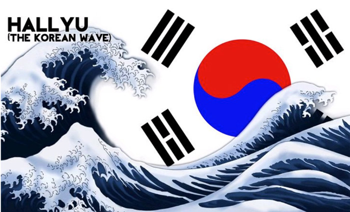

Корейская волна, или Халлю (кор. 한류, кит. 韓流, роман. Hallyu) — понятие, относящееся к распространению современной культуры Южной Кореи по всему миру. Термин был введен в обиход в Китае в середине 1990-х. Его авторами стали пекинские журналисты, поражённые быстрорастущей популярностью в стране южнокорейской индустрии развлечений. Халлю или K-Wave – два названия одного явления, которое в русском переводе звучит как «корейская волна». То есть, K-Wave – это волна увлечения южнокорейской культурой: начиная от музыки и кино и заканчивая внешним видом. Нередко это же явление именуют Халлю – так его название звучит на китайском языке.
Точкой отсчета для Халлю принято считать 1997 год. Тогда, в разгар экономического кризиса, в стране возникла альтернативная идея сделать ставку не на развитие промышленности, а на привлечение инвестиций в высокодоходную сферу шоу-бизнеса. Идея оказалась вполне успешной. Уже спустя пару лет в соседних странах вырос интерес к корейским сериалам (дорамам) и поп-музыке. Это явление и назвали «корейской волной».
О направлениях распространения корейской волны:
- Телевидение. - Музыка. - Другие аспекты корейской волны. - Халлю в современной России. - Галлерея.